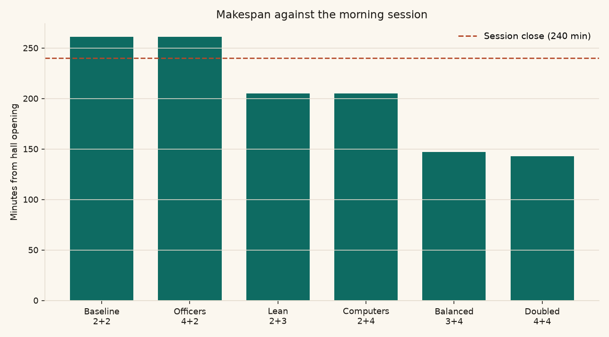
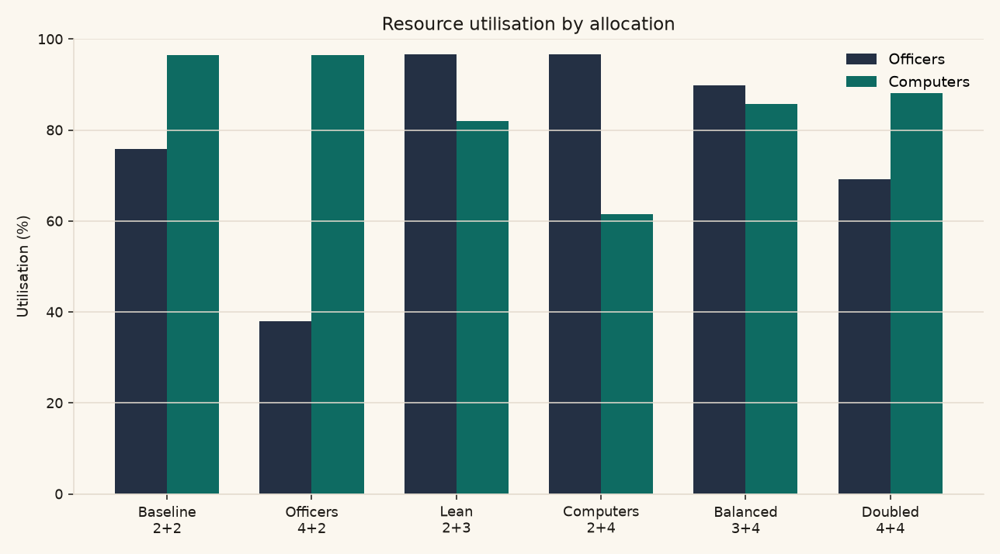
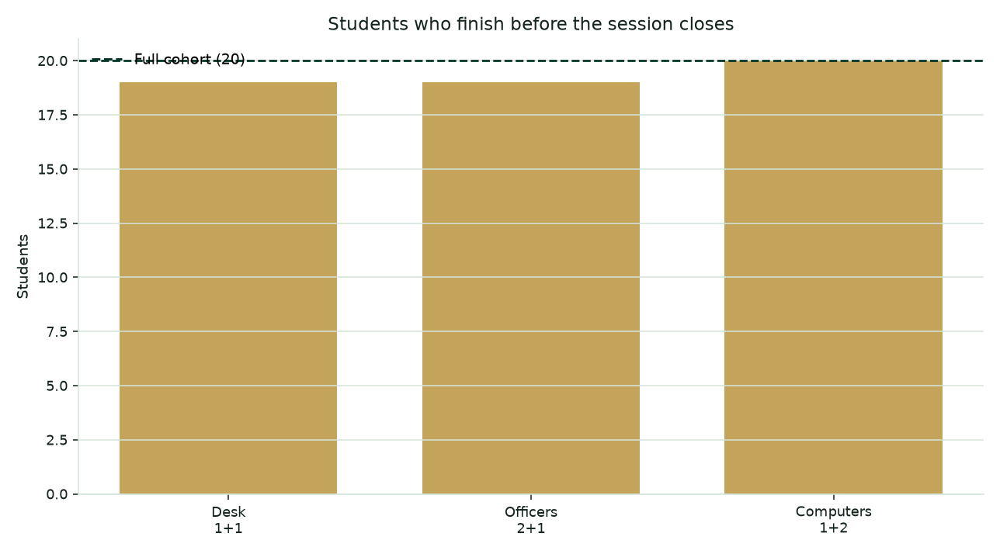

Step 1
Registry check
A registry officer checks the student ID and confirms the programme: Computer Science, Business Information Technology, or Business Administration.
6 min · officer
Palm University College · Manya Jorpanya
One morning at the Registry. 20 students arrive every 8 minutes from 08:00. The desk is open for 240 minutes. Arrivals and processing times are fixed, so this schedule is the same every time the program runs.
Step 1
A registry officer checks the student ID and confirms the programme: Computer Science, Business Information Technology, or Business Administration.
6 min · officer
Step 2
The student registers semester courses on a Student Portal computer at the registry desk.
12 min · computer
Step 3
The officer confirms the course list and issues the printed timetable.
4 min · officer
1 officer and 1 computer.
Total time
12:10 · 250 min
Students processed
20
Finished by close
19 / 20
Idle time
60 min
Officer use
80.0%
Computer use
96.0%
System efficiency
33.6%
The same students are registered three times. First the desk as it stands, then one extra officer, then one extra computer.
| Allocation | Officers | Computers | Total time | Processed | Finished | Idle min. | Officer use | Computer use | System efficiency |
|---|---|---|---|---|---|---|---|---|---|
| Current desk | 1 | 1 | 12:10 (250 min) | 20 | 19 | 60 | 80.0% | 96.0% | 33.6% |
| Second officer | 2 | 1 | 12:10 (250 min) | 20 | 19 | 310 | 40.0% | 96.0% | 36.7% |
| Second computer · most efficient | 1 | 2 | 11:24 (204 min) | 20 | 20 | 172 | 98.0% | 58.8% | 45.3% |



The most efficient allocation is Second computer: 1 officer and 2 computers.
Palm University College registers 20 undergraduates on this morning of course-registration week. Each student spends 22 minutes at the desk: a registry check, course registration on the Student Portal, and a timetable. The desk is open for 240 minutes from 08:00. With 1 officer and 1 computer the last student leaves at 250 minutes, 19 of 20 finish before the desk closes, and overtime is 10 minutes.
On the current desk the portal computer is busy for 96.0% of the morning and the officer is busy for 80.0%. Students wait 43.4 minutes on average.
Adding a registry officer (from 1 to 2) leaves the finish time at 250 minutes.
Students finished before the desk closes move from 19 to 19. Officer utilisation moves from 80.0% to 40.0%.
Adding a portal computer (from 1 to 2) brings the finish time forward by 46 minutes, from 250 to 204.
Students finished before the desk closes move from 19 to 20. Average waiting moves from 43.4 minutes to 26.6 minutes.
The most efficient allocation is Second computer: 1 officer and 2 computers. It finishes 20 of 20 students before the desk closes, in 204 minutes, with overall utilisation 71.9% and 172 idle resource-minutes.